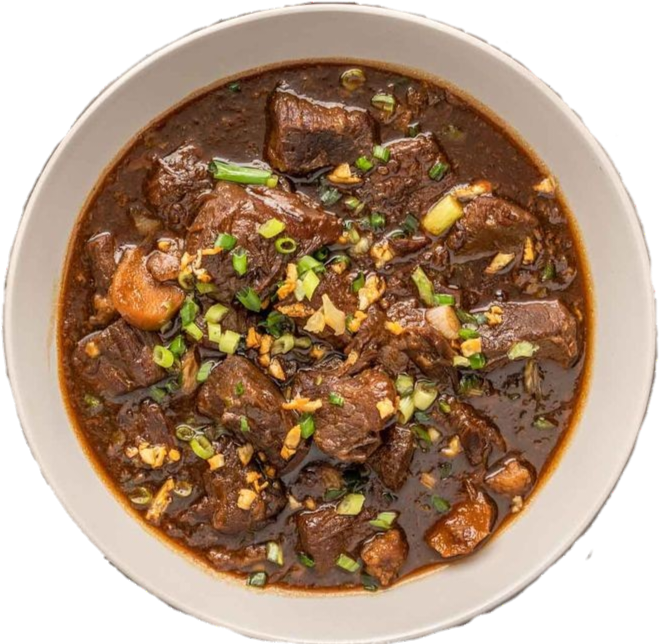

Beef pares
Ingredients:
- 1 kg beef brisket, cubed
- 3 tablespoons cooking oil
- 1 onion, chopped
- 6 cloves garlic, minced
- 1 thumb-sized ginger, sliced
- 1/2 cup soy sauce
- 1/4 cup brown sugar
- 1 beef bouillon cube
- 6 cups water
- Salt and pepper to taste
- Spring onions, chopped (for garnish)
- Chili flakes (optional, for added spice)
Procedure:
- Heat cooking oil in a pot over medium heat.
- Saute chopped onions until translucent.
- Add minced garlic and saute until fragrant.
- Add the cubed beef brisket and cook until browned on all sides.
- Pour water into the pot, enough to cover the beef.
- Add soy sauce, brown sugar, and beef bouillon cube. Stir to combine.
- Bring the mixture to a boil, then reduce heat to low and let it simmer for 1.5 to 2 hours or until the beef is tender.
- Once the beef is tender, remove it from the pot and set aside.
- Strain the remaining liquid to remove any impurities.
- Return the strained liquid to the pot and bring to a boil.
- In a separate pan, heat cooking oil and fry the beef until browned and slightly crispy.
- Add the fried beef back to the pot with the boiling liquid.
- Simmer for an additional 10-15 minutes until the sauce thickens.
- Adjust seasoning with salt and pepper if needed.
- Serve hot with steamed rice and enjoy!